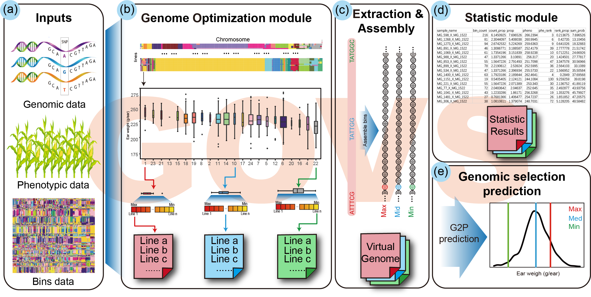

GOVS

GOVS (Genome Optimization via Virtual Simulation) is an integrative R package for maize breeding that streamlines genome optimization via virtual simulation achieve guidance of lines selection and population development. GOVS describes a promising strategy that can help breeders to select materials in a purposeful and directional manner, with the purpose of enabling breeders to combine others technologies with rapidly genetic gain benefit by genome optimization.Above figure illustrate the framework of GOVS, GOVS consists of four main modules:
- Genome optimization module for virtual simulation of optimal genome.
- Extraction & assembly module for extraction and assembly of virtual genome.
- Statistic module for contribution statistic of virtual genome.
- Genome prediction module for genotype-to-phenotype prediction of optimal genome.
Download link: GOVS_1.0.tar.gz
Github: GOVS
QuickStart: GOVS QuickStart
Reference Manual: Reference Manual
Cite:
Qian Cheng, Shuqing Jiang, Feng Xu, Qian Wang, Yingjie Xiao, Ruyang Zhang, Jiuran Zhao, Jianbing Yan, Chuang Ma, Xiangfeng Wang, Genome optimization via virtual simulation to accelerate maize hybrid breeding, Briefings in Bioinformatics, 2021;, bbab447, https://doi.org/10.1093/bib/bbab447
Contact us: qchengray@gmail.com
Note: cademic users can download directly, industrial users first contact us.